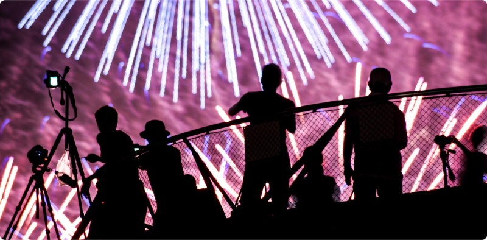
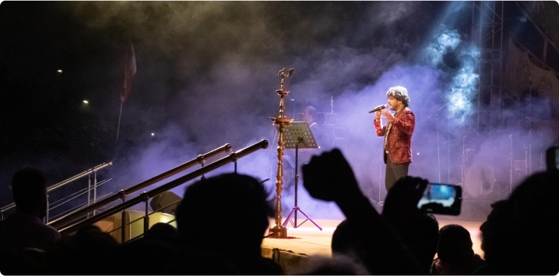

Photographing Live Performances:
Capturing the Energy of the Moment
Live performances offer a dynamic and electrifying atmosphere, filled with energy, emotion, and excitement. Capturing these fleeting moments through photography allows us to preserve the essence of the performance and relive its magic indefinitely. In this article, we will explore techniques for effectively photographing live events and capturing the energy of the moment.
Preparation and Planning
Before photographing a live performance, it's essential to familiarize yourself with the venue, stage layout, and performance schedule. Arrive early to scout the location, identify potential shooting positions, and assess lighting conditions. Additionally, research the performers and their repertoire to anticipate key moments and ensure you're prepared to capture them.
Choosing the Right Equipment
Selecting the appropriate camera gear is crucial for capturing high-quality images in dynamic, low-light environments. Opt for a fast, low-light-capable camera body paired with a variety of lenses to accommodate different shooting scenarios. Prime lenses with wide apertures are particularly useful for capturing sharp, well-exposed images in challenging lighting conditions.
Mastering Exposure and Settings
Achieving proper exposure in live performance photography can be challenging due to rapidly changing lighting conditions and fast-moving subjects. Experiment with different exposure settings, such as aperture, shutter speed, and ISO, to find the optimal balance between capturing motion blur and freezing action. Consider using manual or semi-automatic shooting modes to maintain control over exposure settings.
Capturing Key Moments
To capture the energy and emotion of live performances, focus on anticipating and capturing key moments that convey the essence of the event. Keep an eye out for dramatic gestures, facial expressions, and interactions between performers and the audience. Be prepared to shoot continuously to ensure you don't miss critical moments.
Embracing Creativity and Experimentation
While technical proficiency is essential in live performance photography, don't be afraid to experiment with creative techniques and compositions to capture unique and compelling images. Experiment with different angles, perspectives, and framing techniques to add visual interest and convey the atmosphere of the performance.
Respecting Performers and Audience
When photographing live performances, it's essential to respect the performers' and audience's privacy and boundaries. Avoid disrupting the performance or distracting the audience with intrusive camera equipment or flash photography. Maintain a respectful distance from the stage and be mindful of the performers' preferences regarding photography.
Post-Processing and Editing
After the performance, take the time to review and select the best images for post-processing and editing. Use editing software to fine-tune exposure, contrast, and color balance, ensuring your images accurately reflect the atmosphere and mood of the performance. Avoid excessive editing that detracts from the authenticity of the images.
Sharing and Showcasing Your Work
Once you've edited your images, consider sharing them with the performers, venue, and audience members to commemorate the event and showcase your work. Share your images on social media platforms, photography forums, or personal portfolios to reach a wider audience and receive feedback on your work.
Photographing live performances offers a unique opportunity to capture the energy, emotion, and excitement of artistic expression. By employing careful preparation, technical proficiency, and creative vision, you can create compelling images that preserve the magic of live events for years to come. Embrace the challenge, immerse yourself in the moment, and let your passion for photography shine through in every image you capture.